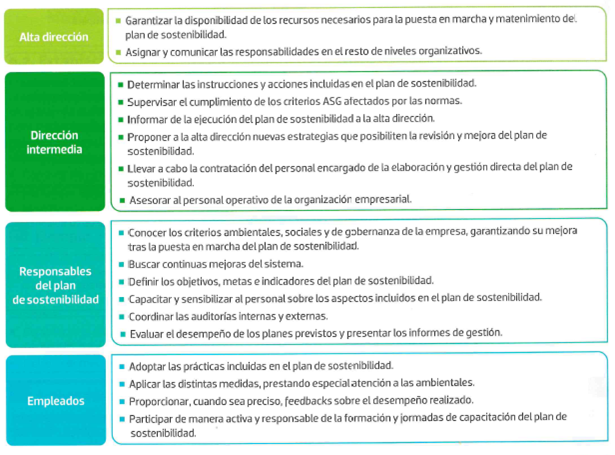
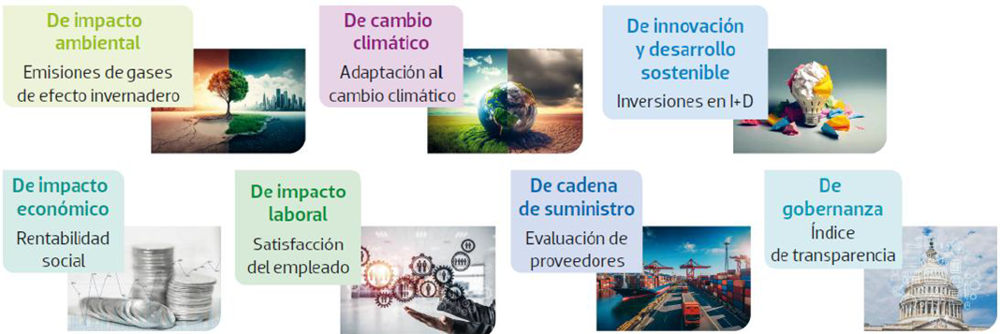
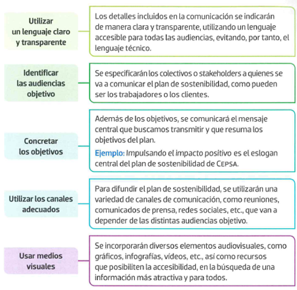

Sesión 5: Asignar responsabilidades
Los roles y las responsabilidades

Indicadores de desempeño
Tipos de indicadores clave

Seguimiento, evaluación y mejora
Seguimiento: el seguimiento del plan de sostenibilidad debe ser definido de antemano, programando un calendario de fechas concretas donde se valore el grado de consecución de los objetivos, apoyándonos en los indicadores de sostenibilidad, que nos darán unos datos cuantitativos que posibiliten la valoración objetiva de este.
Evaluación: al realizar la tarea de evaluación o revisión es conveniente contar con un feedback de los grupos de interés implicados, para posteriormente llevar a cabo la rendición de cuentas del plan de sostenibilidad.
Mejora: el procedimiento de mejora debe hacerse anualmente para acumular datos extraídos de las posibles evaluaciones trimestrales o anuales, tras la emisión del informe de reporte final junto a las correcciones propuestas.
Comunicación e integración
Las características de la comunicación

Actividad
Entra en la página web de CEPSA para ver su plan de sostenibilidad: https://bit.ly/3SIud71. Destaca alguna de sus líneas prioritarias de acción en un vídeo, podcast o juego o breakout. Esta actividad se puede hacer individualmente, en parejas o en grupos de hasta 5 personas. Los que lo hagáis en grupo tiene que salir la voz de todos los integrantes del grupo si hacéis vídeo o podcast. En algún momento de la actividad de vuestra elección tendrá que salir los nombres de los integrantes del grupo.
Dependiendo de la opción elegida puedes utilizar las siguientes herramientas: OpenShot, OBS Studio, Canva, ClipChamp, Filmora, Genially, Prezi, Audacity, GarajeBand, CatCut o cualquier otra herramienta que conozcas.